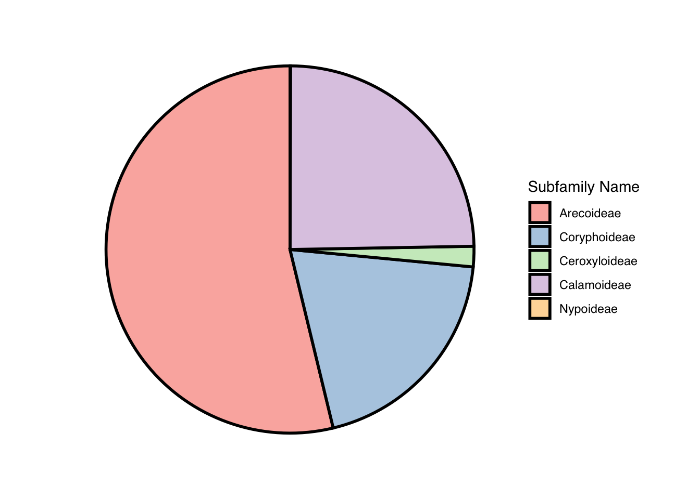
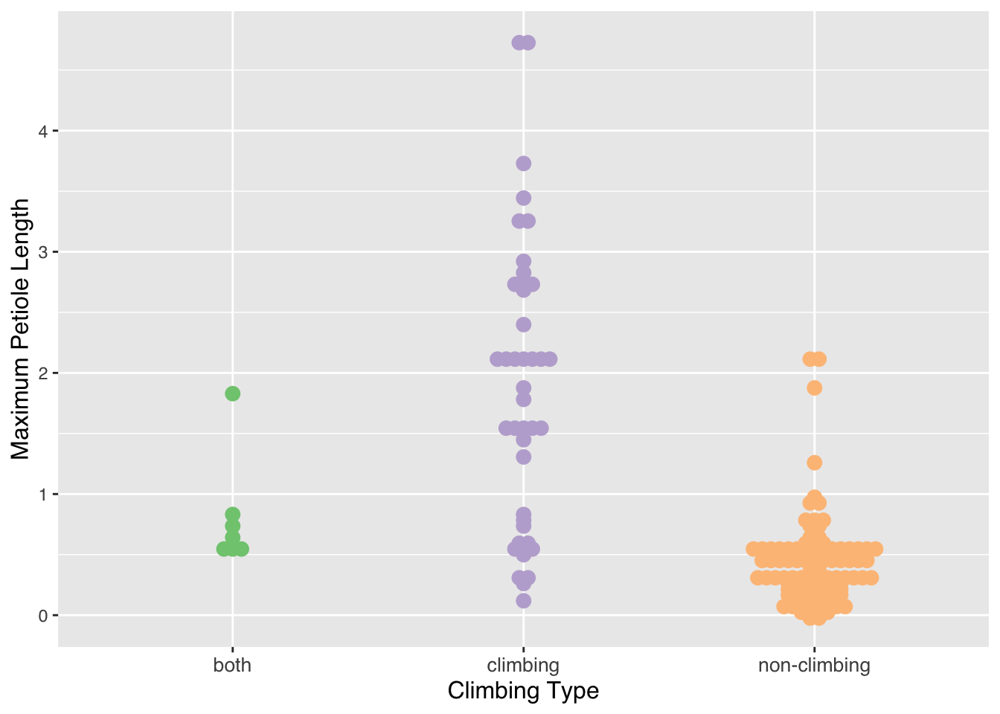
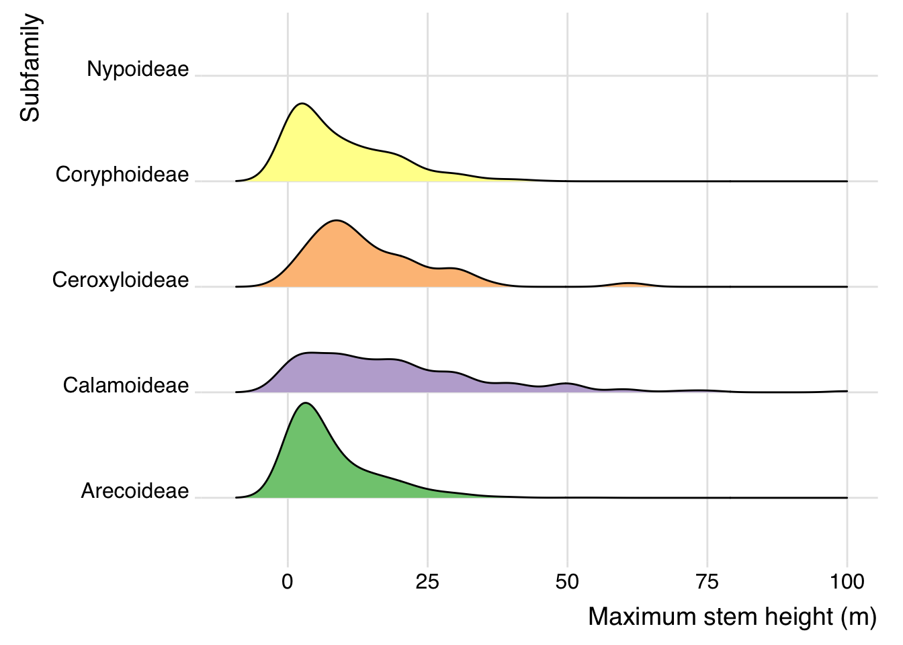

HW10
Sarah Stover
2025-05-06
Advanced ggplotting: (Worked on this Homework with Rei) Using the Palm Trees data set from TidyTuesday:
#loading the packages
library(ggplot2)
library(ggridges)
library(ggbeeswarm)
library(GGally)## Registered S3 method overwritten by 'GGally':
## method from
## +.gg ggplot2library(ggpie)
library(ggmosaic)##
## Attaching package: 'ggmosaic'## The following object is masked from 'package:GGally':
##
## happylibrary(scatterpie)## Warning: package 'scatterpie' was built under R version 4.4.1## scatterpie v0.2.4 Learn more at https://yulab-smu.top/library(waffle)
library(DescTools)## Warning: package 'DescTools' was built under R version 4.4.1library(treemap)
library(devtools)## Loading required package: usethis## Warning: package 'usethis' was built under R version 4.4.1library(extrafont)## Registering fonts with R#reading in the Palm Tree data set
palmtrees <- readr::read_csv('https://raw.githubusercontent.com/rfordatascience/tidytuesday/main/data/2025/2025-03-18/palmtrees.csv',show_col_types = FALSE)
#looking at top rows of df
head(palmtrees)## # A tibble: 6 × 29
## spec_name acc_genus acc_species palm_tribe palm_subfamily climbing acaulescent
## <chr> <chr> <chr> <chr> <chr> <chr> <chr>
## 1 Acanthop… Acanthop… crinita Areceae Arecoideae climbing acaulescent
## 2 Acanthop… Acanthop… rousselii Areceae Arecoideae climbing acaulescent
## 3 Acanthop… Acanthop… rubra Areceae Arecoideae climbing acaulescent
## 4 Acoelorr… Acoelorr… wrightii Trachycar… Coryphoideae climbing acaulescent
## 5 Acrocomi… Acrocomia aculeata Cocoseae Arecoideae climbing acaulescent
## 6 Acrocomi… Acrocomia crispa Cocoseae Arecoideae climbing acaulescent
## # ℹ 22 more variables: erect <chr>, stem_solitary <chr>, stem_armed <chr>,
## # leaves_armed <chr>, max_stem_height_m <dbl>, max_stem_dia_cm <dbl>,
## # understorey_canopy <chr>, max_leaf_number <dbl>,
## # max__blade__length_m <dbl>, max__rachis__length_m <dbl>,
## # max__petiole_length_m <dbl>, average_fruit_length_cm <dbl>,
## # min_fruit_length_cm <dbl>, max_fruit_length_cm <dbl>,
## # average_fruit_width_cm <dbl>, min_fruit_width_cm <dbl>, …Bar Plot
looking at the species per subfamilies and the different fruit shapes per subfamily
#barplot of subfamily species with different fruit shapes
palm_barplot <- ggplot(palmtrees) +
aes(x=palm_subfamily,fill=fruit_shape) +
geom_bar(position="dodge",color="black",size=0.5) +
labs(x = "Subfamily",
y = " # of Species within Subfamily",
fill = "Fruit Shape") +
scale_fill_brewer(palette = "Pastel1") +
theme(text = element_text(family = "Helvetica"),
axis.title.x = element_text(size = 12),
axis.text.x = element_text(size = 10),
axis.title.y = element_text(size = 10))## Warning: Using `size` aesthetic for lines was deprecated in ggplot2 3.4.0.
## ℹ Please use `linewidth` instead.
## This warning is displayed once every 8 hours.
## Call `lifecycle::last_lifecycle_warnings()` to see where this warning was
## generated.palm_barplot
ggsave(palm_barplot,file="palm_barplot.png",width=10,height=6,bg = "white")Pie Chart
looking at the size of each subfamily of palm tree
palm_piechart <- ggpie::ggpie(data=palmtrees,
group_key="palm_subfamily",
count_type="full",
label_info="ratio",
label_type="none") +
scale_fill_brewer(palette = "Pastel1") +
labs(fill = "Subfamily Name") +
theme(text = element_text(family = "Helvetica"))## Scale for fill is already present.
## Adding another scale for fill, which will replace the existing scale.palm_piechart
ggsave(palm_piechart,file="palm_piechart.png",width=10,height=6,bg = "white")sub-setting the data set by sub-family
arecoideae <- palmtrees[which(palmtrees$palm_subfamily == "Arecoideae"),]
calamoideae <- palmtrees[which(palmtrees$palm_subfamily == "Calamoideae"),]
ceroxyloideae <- palmtrees[which(palmtrees$palm_subfamily == "Ceroxyloideae"),]
coryphoideae <- palmtrees[which(palmtrees$palm_subfamily == "Coryphoideae"),]
nypoideae <- palmtrees[which(palmtrees$palm_subfamily == "Nypoideae"),]Beeswarm Plot This beeswarm plot explores Petiole size and if the palm trees in the sub-family Calamoideae climb. Petiole is the stalk that connects the stem to the leaf blade. This shows that Calamoideae plants with a longer petiole tend to be climbers.
palm_beeswarm <- ggplot(data=calamoideae) +
aes(x=climbing,y=max__petiole_length_m,color=climbing) +
ggbeeswarm::geom_beeswarm(method = "center",size=3) +
scale_color_brewer(palette = "Accent") +
labs(x = "Climbing Type", y = "Maximum Petiole Length") +
theme(legend.position="none") +
theme(text = element_text(family = "Helvetica"),
axis.title.x = element_text(size = 12),
axis.text.x = element_text(size = 10),
axis.title.y = element_text(size = 12))
palm_beeswarm## Warning: In `position_beeswarm`, method `center` discretizes the data axis (a.k.a the
## continuous or non-grouped axis).
## This may result in changes to the position of the points along that axis,
## proportional to the value of `cex`.
## This warning is displayed once per session.## Warning: Removed 477 rows containing missing values or values outside the scale range
## (`geom_point()`).
ggsave(palm_beeswarm,file="palm_beeswarm.png",width=10,height=6,bg = "white")## Warning: Removed 477 rows containing missing values or values outside the scale range
## (`geom_point()`).Waffle plot
This plot shows the number of tribes in the subfamily Calamoideae and the number of species per tribe
tabled_data <- as.data.frame(table(class=coryphoideae$palm_tribe))
palm_waffle <- ggplot(data=tabled_data) +
aes(fill = class, values = Freq) +
waffle::geom_waffle(n_rows = 10, size = 0.3, colour = "white") +
scale_fill_manual(name = "Tribe Names:",
values = c("#698B69", "#528B8B","#CD8C95", "#B2DFEE", "#EE9572","#CDCDC1","#CD96CD","#CDBA96"),
labels = c("Borasseae", "Caryoteae", "Chuniophoeniceae","Corypheae","Cryosophileae","Phoeniceae","Sabaleae","Trachycarpeae")) +
coord_equal() +
theme_void() +
theme(legend.position = "bottom", text = element_text(family = "Helvetica"))
palm_waffle
ggsave(palm_waffle,file="palm_waffle.png",width=10,height=6,bg = "white")Ridgeline plot
This plot shows the range of maximum stem heights per palm sub-family
palm_subfamily_df <- data.frame(palmtrees$palm_subfamily)
palm_stemheight_df <- data.frame(palmtrees$max_stem_height_m)
palm_df <- cbind(palm_subfamily_df, palm_stemheight_df)
palm_df_clean <- palm_df[complete.cases(palm_df),]
palm_ridgeline <- ggplot(data=palm_df_clean,
aes(x=palmtrees.max_stem_height_m,y=palmtrees.palm_subfamily, fill = palmtrees.palm_subfamily)) +
scale_fill_brewer(palette = "Accent") +
ggridges::geom_density_ridges(scale = 0.9) +
ggridges::theme_ridges() +
scale_x_continuous(limits = c(-10,100)) +
xlab("Maximum stem height (m)") +
ylab("Subfamily") +
theme(legend.position = "none", text = element_text(family = "Helvetica"))
palm_ridgeline## Picking joint bandwidth of 3.08## Warning: Removed 3 rows containing non-finite outside the scale range
## (`stat_density_ridges()`).
ggsave(palm_ridgeline,file="palm_ridgeline.png",width=10,height=6,bg = "white")## Picking joint bandwidth of 3.08## Warning: Removed 3 rows containing non-finite outside the scale range
## (`stat_density_ridges()`).